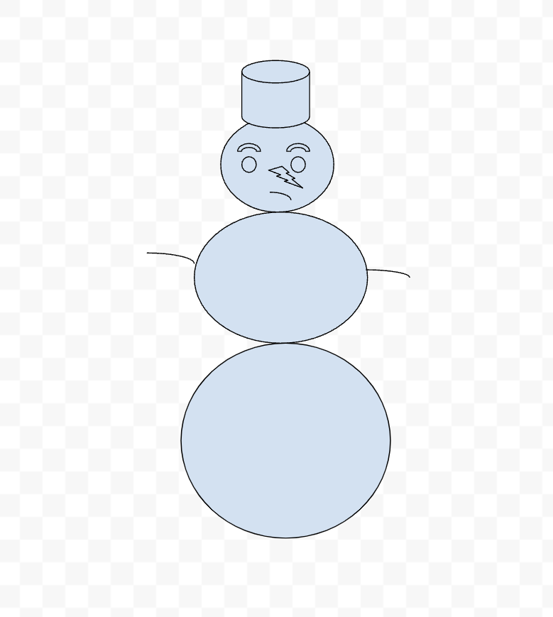

This is the Visual Design Page
Artifact #1

This is when we chose an artist that we liked and recreatred one of their album covers. In this image, you can see that I chose A boogie and his album Hoodie Szn becasue it was my favorite.
Artifact #2

This assignment was when we were supposed to create a snowman out of a sock but since I didn't want to cut one of my socks up. So I simply just decided to create a snowman on Google drawings becasue it was easier to do that than something else.